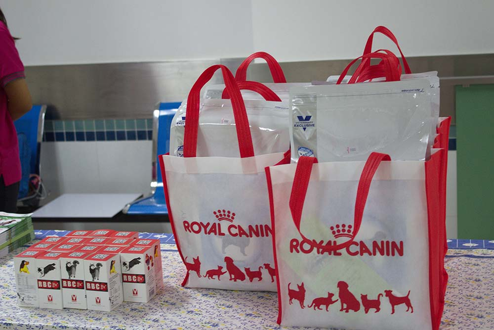

1. ลงทะเบียนเพื่อทำการตรวจสุขภาพ โดยกรอกประวัติสุนัข และชั่งน้ำหนัก
2. ตรวจสุขภาพ และทำการเจาะเลือดสุนัข
3. นำเลือดของสุนัขเข้าแลป เพื่อตรวจดูว่าเลือดสมบูรณ์ไหม สามารถบริจาคได้หรือไม่
4. เข้าสู่กระบวนการบริจาคเลือด โดยจะเจาะเลือดจากเส้นเลือดดำใหญ่ที่บริเวณคอ โดยใช้เวลาประมาณ 10 - 15 นาที
5. ทำการเก็บเลือดของสุนัขที่ได้ เข้าคลังเลือด

6. ให้สุนัขพักสักครู่ประมาณ 5 - 10 นาที จากนั้นสามารถพากลับบ้านได้ โดยทางโรงพยาบาลจะจัดยาบำรุง และอาหารสุนัขให้กับสุนัขที่ทำการบริจาคเลือดด้วย
แหล่งที่มาข้อมูล: โรงพยาบาลสัตว์ ม.เกษตรศาสตร์ บางเขน